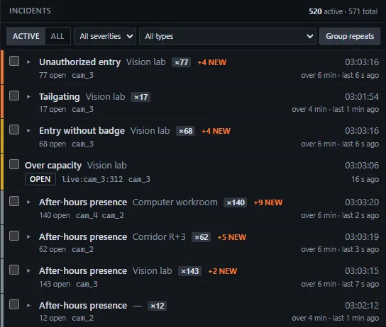

Problem
A typical security operations room has dozens of camera feeds and one or two people watching them. Human attention does not scale to a wall of screens: the moment that matters is easy to miss, and is usually found only afterwards, by scrubbing through hours of recordings.
Meanwhile the badge system knows who opened a door and the cameras know how many people walked through, but nobody connects the two. Most “AI camera” products add person detection, which moves the problem rather than solving it. The operator now has a thousand alerts a day and still has to work out what each one means.
Approach
Office Vision Twin keeps a live model of the building: its rooms and doors, who is where, and who badged in. Incidents come from explicit, testable rules over that model, not from a model’s opinion. Tailgating, for example, is more people entering through a badge door than badges were granted. Each incident carries its severity, its reason, the linked events and a clip of video.
A language model only explains. It sees one incident’s evidence packet, must cite an event ID for every claim, and a second pass rejects any claim the records do not support. Operators close incidents; the AI does not.
The operator dashboard shows a camera wall, a live floor plan with room headcounts, and an incident queue with severity, status and bulk triage, and it can be driven from the keyboard. Every picture shows its age, and stale data is flagged rather than shown as live.
Vision runs on premises, so video stays in the building, and the optional AI review receives text event records only. There is no face recognition. Each camera processes only its newest frame, so delay cannot build up, and slow cameras skip frames and say so.
Results
 Fig. 1 · The real operator dashboard: six cameras, the incident queue and the live floor plan.
Fig. 1 · The real operator dashboard: six cameras, the incident queue and the live floor plan.
 Fig. 2 · One camera, tracked: detection boxes and track IDs, frame rate and delay underneath.
Fig. 2 · One camera, tracked: detection boxes and track IDs, frame rate and delay underneath.

Fig. 3 · The incident queue: each rule raises an incident with its room, camera and count.
How an incident is raised
- 95–121 ms p95, camera frame to floor plan
- Input
Cameras and badge readers
Six CCTV cameras at 5 fps, plus the door badge log.
- Detect
People detection, on site
YOLO on OpenVINO. No face recognition.
- Track
Live floor plan
Rooms, doors and people, matched to badges.
95–121 ms p95 from camera frame to here
- Decide
Rules
Tailgating, unauthorised entry, after-hours access.
- Output
Incident
Severity, reason, linked events and a video clip.
- Explain
An LLM writes the explanation
Amazon Bedrock drafts the write-up and must cite an event ID for every claim. A second pass rejects any claim the records do not support.
Claims checked
- decides the incidentonly explains it
313 + 33 tests
Backend tests run with pytest, dashboard tests with vitest.
The operator dashboard
A camera wall, a live floor plan with room headcounts, and a queue of incidents such as unauthorised entry and tailgating. Every API route and the live push channel require an access token. Screenshots of the dashboard and sign-in screen are on the full case study.
Limits
This is a pilot-ready proof of concept, not a certified product. It uses a single access token, with no per-user accounts, roles or single sign-on yet, and runs on one node with SQLite, so there is no high availability.
People are tracked per camera, with no re-identification across cameras. It has been tested on recorded footage replayed live, including over RTSP, but not on a production camera network. The default detector is licensed AGPL-3.0, so commercial use needs a licence or a swap to a permissively licensed detector.
Code
The source, manuals and setup scripts are on GitHub under AGPL-3.0. The citation check from the incident explainer is now a standalone benchmark, groundcheck.